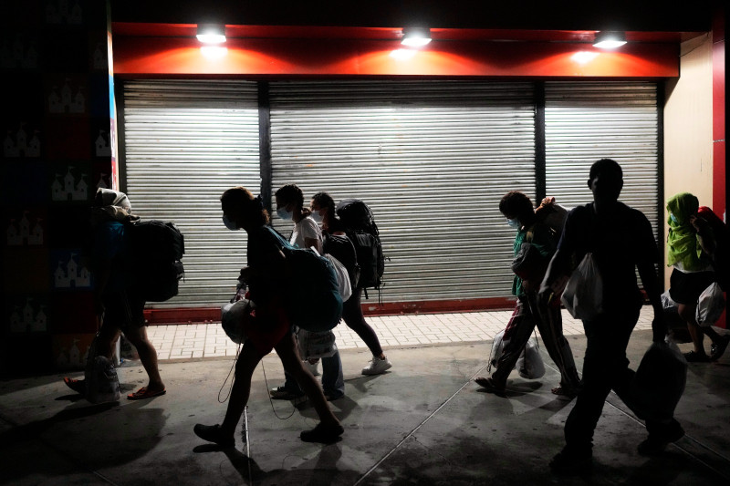

Los pacientes se complican porque en centros no les aplican el “trombolítico”
El 50% de l Bos que hacen infartos cardíacos en el país terminan en insuficiencia o fallo cardiaco, a pesar de que esa complicación puede evitarse en muchos de esos ellos si cuando llegan a las emergencias se le aplicara el medicamento trombolìtico, el cual está disponible en 30 hospitales y es suplido por el Programa de Medicamentos Esenciales (PROMESE).
Seguir leyendo
Avería eléctrica dejó sin servicio el acueducto Haina-Manoguayabo
La Corporación del Acueducto y Alcantarillado de Santo Domingo (CAASD) informó ayer que el acueducto Haina-Manoguayabo quedó fuera debido a una avería eléctrica.
En respuesta a la situación, la empresa distribuidora de Electricidad del Sur (Edesur) señaló que fue corregida la avería interna que mantuvo desde la noche del sábado fuera de servicio de manera parcial la planta de tratamiento de agua Haina-Manoguayabo, que suministra agua a Santo Domingo.
Seguir leyendo
Un avión que volaba entre India y Nueva York reprograma su ruta por posible amenaza
Un avión de la aerolínea india Air India que cubría la ruta entre Bombay y Nueva York tuvo que modificar sus planes de vuelo este lunes y regresar al aeropuerto de la capital financiera de la India después de registrar una posible amenaza a su seguridad, según informó la compañía en un comunicado.
Seguir leyendo
El papa Francisco sigue "mejorando", pero es "demasiado pronto" para que salga del hospital
El papa Francisco, que lleva más de tres semanas hospitalizado por una neumonía, está mostrando signos de mejoría, pero todavía es "demasiado pronto" para que vuelva a casa, indicó este lunes una fuente del Vaticano.
El líder espiritual de los católicos del mundo, de 88 años, ingresó en el hospital Gemelli de Roma el 14 de febrero donde ha sufrido varias crisis respiratorias, la última hace siete días.
Seguir leyendo

Panamá libera a decenas de migrantes enviados por EE.UU.
Después de semanas de demandas y críticas relacionadas con los derechos humanos, Panamá liberó el sábado a decenas de migrantes que llevaban semanas detenidos en un campamento remoto tras ser deportados de Estados Unidos, y les dijo que tenían 30 días para abandonar la nación centroamericana.
Esto sumió a muchos, como Hayatullah Omagh, un afgano de 29 años que huyó de Afganistán en 2022 tras la toma Talibán del país, en un limbo legal y sin un camino claro a seguir.
“No ha sido confirmado por el equipo de nosotros”, dijo Salas a Listín Diario. “Pareciera que es un rumor. No hay indicios de nada de eso”.
Seguir leyendo
EEUU elimina el 83 % de los programas de ayuda internacional de USAID
El secretario de Estado de Estados Unidos, Marco Rubio, anunció este lunes que el gobierno de Donald Trump canceló el 83 % de los programas de la agencia estadounidense de desarrollo USAID, que representa una parte importante de la ayuda humanitaria mundial.
El presidente Trump firmó en enero una orden ejecutiva que congeló toda la ayuda exterior para evaluar su conformidad con la política de su gobierno, en particular en temas como el aborto, la planificación familiar o la defensa de la diversidad y la inclusión.
Seguir leyendo
Así es 'CBP Home', la nueva app de Trump para que los indocumentados se "autodeporten"
El Departamento de Seguridad Nacional (DHS) de Estados Unidos anunció este lunes el lanzamiento de la aplicación 'CBP Home' para que los inmigrantes irregulares notifiquen sus planes para abandonar el país con la promesa de permitir en el futuro el regreso por vías regladas.
La nueva aplicación reemplazará a 'CBP One', utilizada durante el Gobierno de Joe Biden (2021-2025) para que los migrantes pidieran cita para presentar sus casos ante las autoridades estadounidenses en los puertos de entrada.
Seguir leyendo
Huawei defiende la seguridad de sus equipos y se aleja de las discusiones políticas
El gigante tecnológico chino Huawei tiene claro dos cosas en su discurso: defender la seguridad y el respeto a la privacidad en sus equipos y cuidarse de no entrar en los temas políticos.
“Primero que nada, quiero decir que Huawei ha servido a 170 países durante 30 años. Huawei ha mantenido un historial de seguridad 100% limpio”, explica en una entrevista David Wang Chengdong, vicepresidente global de la compañía.
Seguir leyendo